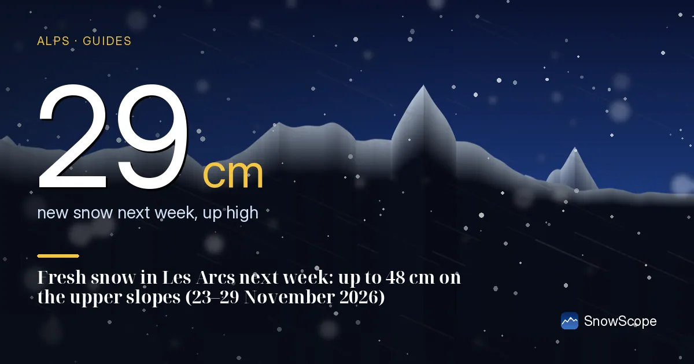
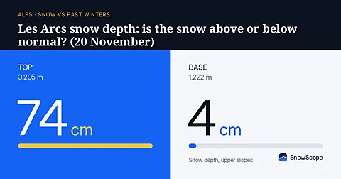

Fresh snow in Les Arcs next week: up to 48 cm on the upper slopes (23–29 November 2026)
Les Arcs enters next week with a wet snowpack from earlier storms, then the week ahead brings another round of fresh snow spread unevenly across five days. The upper slopes will collect 29 cm (ranging from 11 to 48 cm), while the base gets just 12 cm—so height is key to finding the best conditions.
See the live snow forecast for Les Arcs in the SnowScope appSnow depth, powder alerts and the 3D map, free.

How the snow spreads across the week
Next week is not one big storm but several smaller bursts. Thursday 26 November is the standout day at the top with 9 cm (up to 14 cm), but Wednesday 25 adds 6 cm, Saturday 28 brings 3 cm, and Sunday 29 drops 6 cm. The middle days—Tuesday 23, Monday 24, Friday 27—are nearly dry.
The mid-mountain band at 2200 m follows a similar pattern, collecting 27 cm across the week (ranging 9 to 43 cm). Lower down at the base the totals shrink sharply: only 12 cm for the full week, with most falling on Wednesday, Thursday and Friday.
Why height matters so much here
The gap between the top and the base is stark. At 3200 m you are looking at 29 cm for the week; at 1200 m you get 12 cm. That two-and-a-half-fold drop happens because the base sits so low that some precipitation falls as rain rather than snow when mild air moves in.
The upper slopes of the Aiguille Rouge above Arc 2000 will hold the deepest, coldest snow. The lowest runs near Bourg-Saint-Maurice may turn heavy and sticky after any warm spell.
How certain are these numbers?
The forecast carries real uncertainty. At the top, the range spans from 11 to 48 cm—a spread of 37 cm. That wide range means the storm track could either weaken as it approaches or intensify over the massif. The middle value of 29 cm is a reasonable guide but no guarantee.
Storm timing usually becomes clearer first; the total amount keeps shifting until a day or two before the main event. Watch midweek for updates on how Thursday 26 and Friday 27 will shape up.
Nearby resorts: who gets more?
La Plagne (11 km away) and Tignes (14 km away) both forecast 29 cm at the top for the same week, matching Les Arcs. Val d'Isère (19 km away) also sits at 28 cm. These four neighbours are almost level, so snow depth alone won't decide where to go.
The choice comes down to which terrain suits you, which aspect you prefer, and how accessible the high ground feels on the day.
What you'll find right now
Before next week even starts, Les Arcs is holding a substantial pack from the storms of this week: around 100 cm has accumulated at the top from Tuesday 17 to Friday 20 November (the range runs 80–119 cm). That deep base means next week's snow will bond well and build on cold, stable snow.
The base near 1200 m has collected only 2 cm from this week's storms, so the lower runs remain thin and vulnerable to warm spells.
Where and when to ski the fresh snow
Thursday 26 November is the day to plan for. It brings the biggest daily dump at the top (9 cm, possibly 14 cm), and the first clear morning after it—likely Friday morning—will offer soft snow with reasonable visibility before the sun hardens the surface.
Ski high and stay on the upper slopes and long north-facing runs where the new snow will be coldest and most preserved. The Aiguille Rouge terrain above Arc 2000 is your anchor point. Avoid the low runs until temperatures drop or more fresh snow covers them.
Tips for skiers
- Fresh snow on a young snowpack brings avalanche risk: check the official French avalanche bulletin (BERA) for the Vanoise massif before any off-piste skiing.
- Snow on the mountain does not mean lifts are open. Confirm the resort's opening date and which lifts are running before you travel.
- The upper slopes (top of Aiguille Rouge) will hold the best snow all week. The base near Bourg-Saint-Maurice is risky; warm spells will turn it heavy and sticky.
- Watch the forecast midweek. The uncertainty range at the top (11–48 cm) is large enough that updates on Wednesday 25 or Thursday 26 may shift your plans.
- Layer well: mild air is forecast to move through after the storms, so conditions will change day to day.
About these numbers
Resort snow depths are the deepest snow on the resort's upper slopes on the date shown; they are estimates for an area, not a measurement at one point. Forecasts can change. Always read the official avalanche bulletin before going off-piste.
Cite this report
For research, teaching or the press: the numbers and charts are free to reuse under CC BY 4.0 with this citation.
SnowScope (2026), Fresh snow in Les Arcs next week: up to 48 cm on the upper slopes (23–29 November 2026), https://snowscope.app/blog/en/2026/11/les-arcs-powder-forecast-next-week-23-29-november-2026.html, accessed 2026-11-16
SnowScope (Atlas Labs). (2026, November 16). Fresh snow in Les Arcs next week: up to 48 cm on the upper slopes (23–29 November 2026). SnowScope snow reports. https://snowscope.app/blog/en/2026/11/les-arcs-powder-forecast-next-week-23-29-november-2026.html
BibTeX
@misc{snowscope2026lesarcspowderforecastnex,
author = {{SnowScope (Atlas Labs)}},
title = {Fresh snow in Les Arcs next week: up to 48 cm on the upper slopes (23–29 November 2026)},
year = {2026},
month = nov,
howpublished = {\url{https://snowscope.app/blog/en/2026/11/les-arcs-powder-forecast-next-week-23-29-november-2026.html}},
note = {Published 2026-11-16 11:21 UTC; accessed 2026-11-16}
}· CC BY 4.0 · Methods, data and tools →
Les Arcs: snow and temperature by height, this winter vs last (tools) →
Follow Les Arcs
Free: a message when fresh snow is coming, and the forecast every morning.
More snow reports

5 resorts in the Alps, 46 past winters, one date: here is how today compares. Clearly above normal: 0. Confidence: good for the trend, lower for any …

France or Switzerland? Where the snow is better on 16 November. Snow cover, new snow, resorts and the days ahead in France on 16 November.

130 French resorts now have snow cover on 20 November. The Mont Blanc massif has received 297 cm in three days, with more expected.